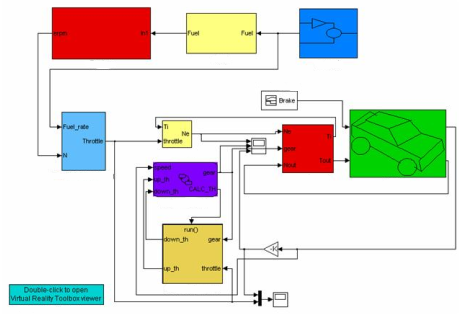
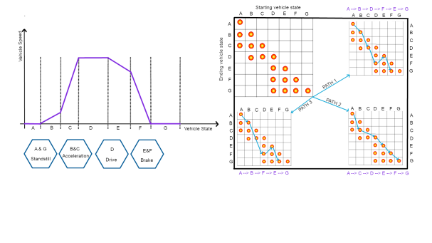

ARXDE® est une ressource spécialisée, bâtie sur notre expérience et notre passion pour le domaine des mathématiques et de l'ingénierie.
Notre expertise reconnue dans ces domaines nous permet de développer des programmes informatiques de traitement de données, capables de satisfaire les exigences les plus spécifiques.
Nous publions des articles, des livres et participons à diverses conférences en utilisant ARXDE™ ressources de traitement de données et d'images pour la création de modèles tridimensionnels, respectivement pour l'intégration de l'intelligence artificielle et de l'apprentissage automatique dans la technologie de travail avec de grands volumes de données.


Archives d'ingénierie
Une revue infinie de solutions d'ingénierie, reconnue internationalement et poursuivie avec votre aide.
Archives scientifiques
Une collection de sujets de recherche dans différents domaines scientifiques. Une véritable source d’inspiration pour les futurs chercheurs et pas seulement.
Des articles:


Services de recherche scientifique et d'ingénierie.
Bénéfices de ARXDE®:
⬦ Conseil technologique et conception de prototypes à partir de modèles mathématiques simulés sur ordinateur.
⬦ Dèveloppement et test de mèthodes de calcul, d'algorithmes et de logiciels.
⬦ Des ètudes avancèes dans le domaine de la mècanique qui nous permettent d'offrir des services de recherche mathèmatique et scientifique notamment dans le domaine de la technologie des vèhicules autonomes et du gènie mècanique.
⬦ Gestion de projet informatique.
- ® -- imaginea 1">
- ® -- imaginea 2">


Services de développement et de tests.
La gamme de services innovants ARXDE® comprend:
⬦ La conception de modèles mathématiques, de systèmes de mesure, d'instruments scientifiques et technologiques.
⬦ Conception et dèveloppement de mèthodes d'essais et d'analyses dans l'industrie automobile et la construction mècanique.
⬦ Services d'analyse scientifique assistèe par ordinateur.
⬦ Services de recherche et dèveloppement, d'essais scientifiques et d'ingènierie assistèe par ordinateur ainsi que services d'essais scientifiques en laboratoire.
Services éditoriaux.
La gamme de services éditoriaux ARXDE® comprend:
Publication de documents accessibles via des bases de données ou Internet.
Rédaction et publication de textes dans le cadre de services de conception technique et de conseil.
Publication de revues basées sur les méthodes de mesure et de test développées.
Nouvelles
Si vous souhaitez être inclus dans la liste de diffusion du serveur ARXDE®, vous pouvez nous contacter à: info@arxde.ro
Contact
E-Mail: info@arxde.ro
Emplacements: Timişoara, Deva